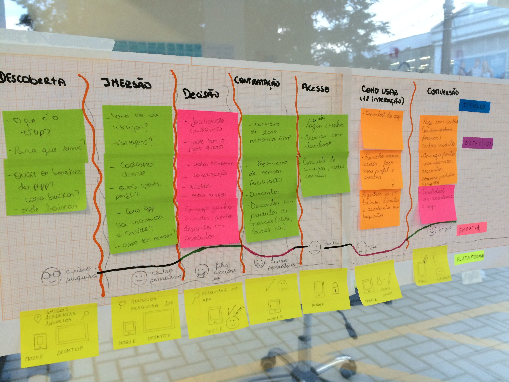
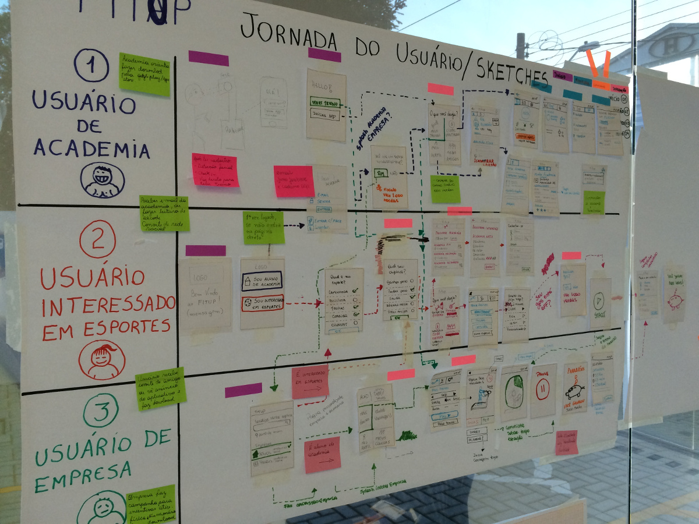
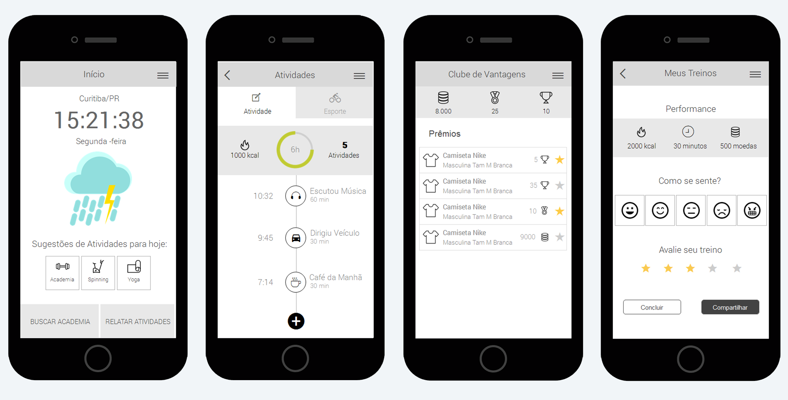
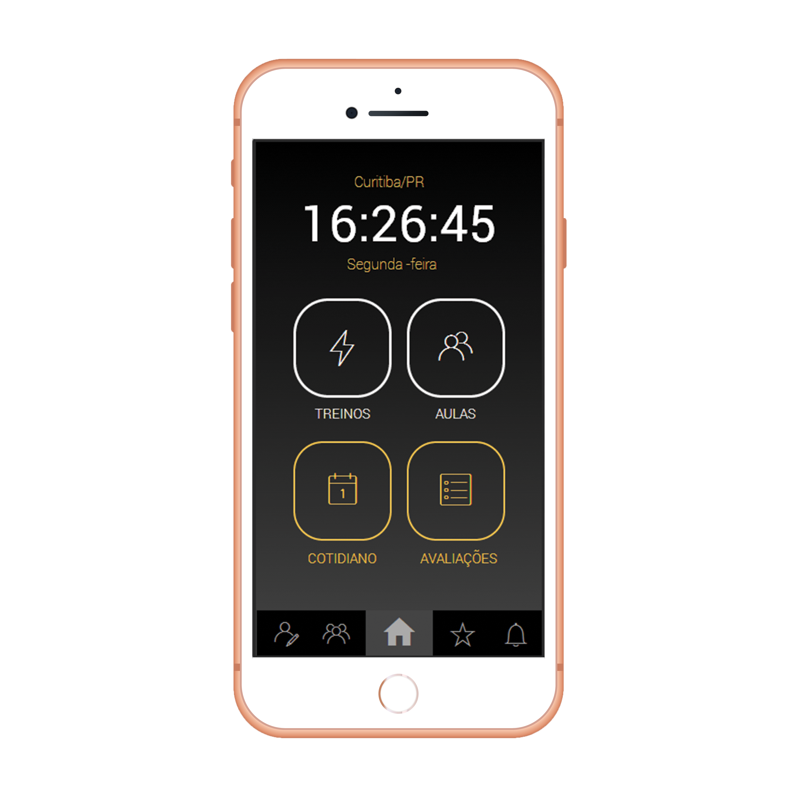
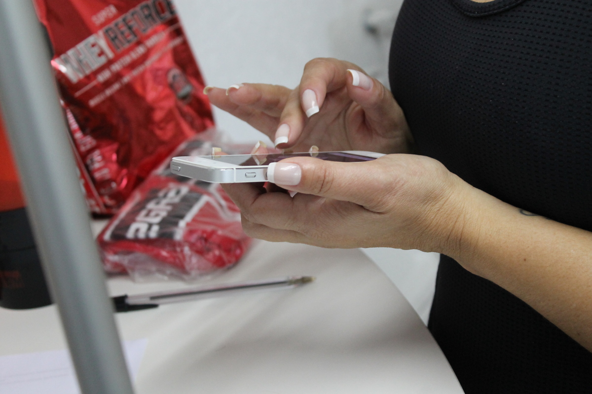
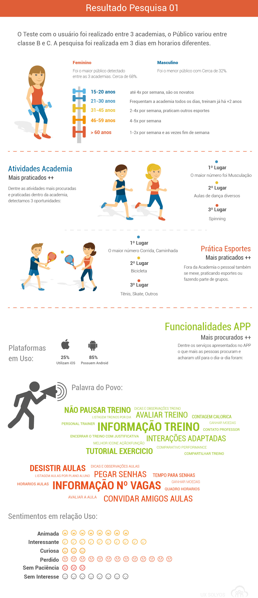

This product was built together with other designers of the team and my role was supporting the discovery problem process and working on the prototypes and validations.
In the beginning, we had the hypothesis that some gyms had problems to organize their processes.
The main issues that we perceived when we talked with gym professionals, were the lack of control of all the gym management activities, since administrative and financial, until the follow up of the client's training.
We started to investigate what kinds of the audience were important for the different types of scenarios.

Mapping the main personas related to the gym clients scenario.
The user journey map helped us to understand how the gym workflow works and the main pain points that we will need to work on.
Gym user's workflow detailed in a User Journey.
The ideas generated resulted in some functionalities for the interface.
For the gym users:
Suggestions: Suggest gym workouts according to the profile.
Daily activity and performance: Calories burned during the day and workout overview.
Gamification: The users having a ranking competition to win badges and coins that can be exchanged for gym products. This is an important feature for keeping users active in gym activities.
For the gym managers and personal trainers:
Management: Administrative, technical, financial and customer management.
Personal trainer follow-up: The personal trainer can assign activities and follow the users and their performance.
Gym access control: Controlling entrance and exit of the users in the gym.
Sketching ideas according the personas requirements.
We built navigable wireframe prototypes to validate the interactions and information architecture.
Mobile wireframes

High Fidelity Prototype
Usability tests were realized in different types of gyms to analyze how easy to use was the product and what improvements can we did.
After the usability tests, we compile all the results in an infographic.
